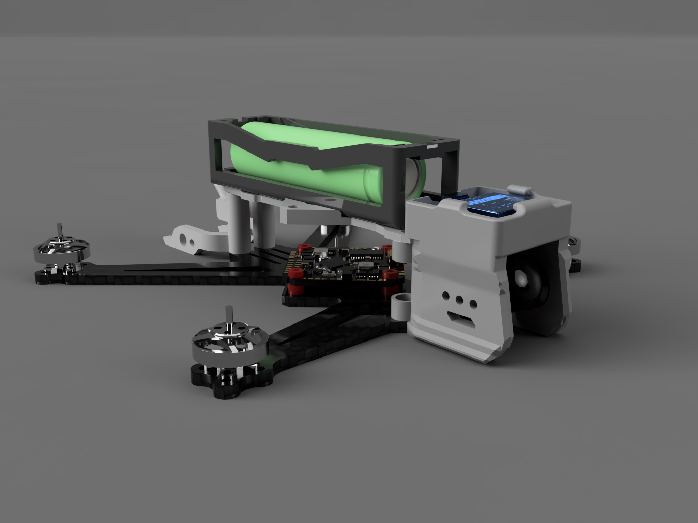
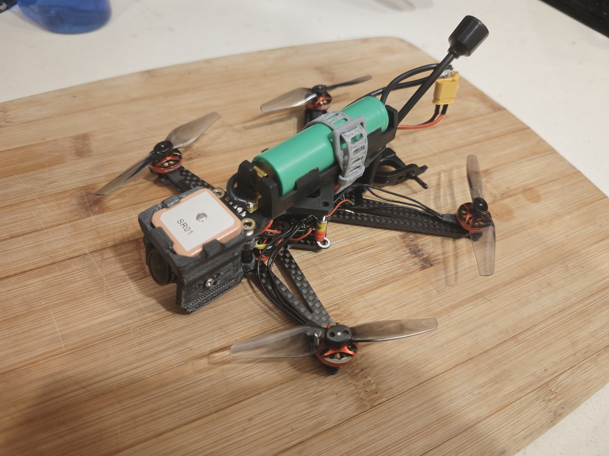

Long Range FPV Drone
I designed the frame in CAD, all 3D-printed mounting components, and validated the build through multiple design iterations. The carbon fiber frame is machined by fabrication partners. Full FPV with camera and live video.
Powered by 1–2S 18650 Li-ion, this drone achieves 20-25 minutes flight time (hovering or cruising). GPS integration enables waypoint navigation and GPS-safe rescue on Betaflight, with support for Betaflight, iNav, and ArduPilot on various flight controllers.


Flight demo running DJI O4 VTX system. Flight performance is identical between the digital and analog; O4 simply replaces the analog video feed with a cleaner digital signal.